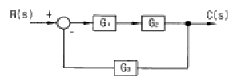
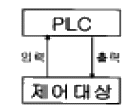
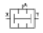
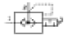
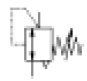
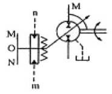
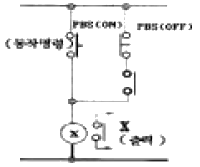
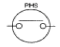
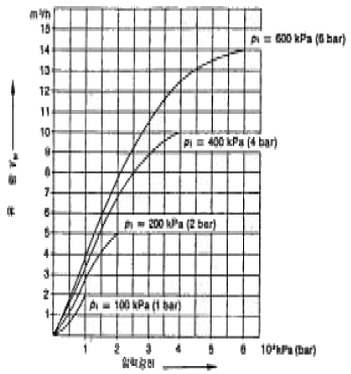

생산자동화산업기사 (2005-05-29 기출문제)
1과목: 기계가공법 및 안전관리
1. 단조작업에서 해머의 무게가 10㎏f, 타격순간의 해머의 속도가 10 m/sec, 타격에 의한 단조 재료 높이의 변화량이 3㎜, 중력가속도가 9.8 m/sec2, 해머의 효율이 0.9였다면, 이 때의 단조 에너지는 약 몇 ㎏f-m인가?
- 40.2
- 43.7
- 45.9
- 50.3
(정답률: 22%)

2. 주물사의 구비조건 중 틀린 것은?
- 용해성이 좋아야 한다.
- 내화성이 있어야 한다.
- 성형성이 좋아야 한다.
- 통기성이 좋아야 한다.
(정답률: 34%)
3. 테르밋 용접이란 무엇인가?
- 원자수소의 발열을 이용한 용접법이다.
- 전기용접과 가스용접법을 결합한 방법이다.
- 산화철과 알루미늄의 테르밋 반응을 이용한 철강재의 용접법이다.
- 액체 산소를 이용한 가스 용접법의 일종이다.
(정답률: 85%)
4. 용접봉에 있어서 플럭스(flux)의 역할이 아닌 것은?
- 아크를 안정시킨다.
- 모재 합금 성분을 보충할 수 있다.
- 정련된 용착금속을 만든다.
- 용착금속을 산화시킨다.
(정답률: 42%)
5. 프레스가공(press work) 중에서 전단가공(shearing) 방법에 해당되지 않는 것은?
- 펀칭(punching)
- 코이닝(coining)
- 트리밍(trimming)
- 블랭킹(blanking)
(정답률: 17%)
6. 길이 측정기가 아닌 것은?
- 버니어 캘리퍼스(vernier calipers)
- 하이트 게이지(height gauge)
- 뎁스 게이지(depth gauge)
- 사인 바(sine bar)
(정답률: 73%)
7. 숏 피닝(shot peening)의 설명과 가장 관계가 먼 것은?
- 금속의 표면 강도를 증가시킨다.
- 피로한도를 높여준다.
- 강구를 공작물 표면에 분사시킨다.
- 표면을 연마한다.
(정답률: 23%)
8. 드릴지그(drill jig)의 사용목적으로 옳은 것은?
- 드릴의 안내가 되며 구멍의 위치를 정확히 하고 센터펀칭을 생략하기 위하여
- 공작물을 견고히 고정하며, 드릴을 정확히 하기 위하여
- 드릴의 흔들림을 방지하기 위하여
- 드릴의 날을 보호하고 수명을 연장시키기 위하여
(정답률: 48%)
9. 절삭가공에서 구성인선(Built-up edge)이 발생하는 이유를 가장 올바르게 설명한 것은?
- 칩의 두께를 감소시키면 발생한다.
- 공구선단에 절삭재가 융착되어 발생한다.
- 공구선단의 날끝이 파괴되어 발생한다.
- 공구의 재질이 강하여 발생한다.
(정답률: 42%)
10. 뒤판(back plate)을 가진 플레이트 지그의 일종이며, 공작물의 형태가 얇아서 비틀리기 쉬운 연한 공작물 가공시 사용하는 지그는?
- 박스 지그
- 샌드위치 지그
- 템플릿 지그
- 채널 지그
(정답률: 36%)
11. 파이프를 구부릴때 파이프속에 모래나 송진으로 채우는 이유는?
- 가열할 때 팽창을 막기 위하여
- 파이프 과열을 막기 위하여
- 안쪽으로 주름이 생기는 것을 막기 위하여
- 파이프 냉각을 막기 위하여
(정답률: 60%)
12. 특히, 구멍 가공에서 다이어몬드,루비,사파이어 등의 가공에 가장 적합한 특수 가공 방법은?(오류 신고가 접수된 문제입니다. 반드시 정답과 해설을 확인하시기 바랍니다.)
- 전해연마
- 방전가공
- 수퍼 피니싱
- 호우닝
(정답률: 17%)
13. 압탕의 역할로서 옳지 않은 것은?
- 균열이 생기는 것을 방지한다.
- 주형내의 쇳물에 압력을 준다.
- 주형내의 용재를 밖으로 배출시킨다.
- 금속이 응고할때 수축으로 인한 쇳물 부족을 보충한다.
(정답률: 0%)
14. 절삭유는 냉각작용, 윤활작용, 세척작용의 효과가 있어서 사용한다. 절삭유의 장점이 아닌 것은?
- 공구 수명을 연장시킨다.
- 표면경도를 증가시킨다.
- 가공 능률을 좋게 한다.
- 다듬질면을 보호한다.
(정답률: 63%)
15. 구성 인선을 감소시키는 방법 중 옳은 것은?
- 절삭속도를 고속으로 한다.
- 공구 상면 경사각을 작게 한다.
- 절삭깊이를 깊게 한다.
- 마찰저항이 큰 공구를 사용한다.
(정답률: 55%)
16. 3차원 측정기에서 측정점 검출기(probe)는 다음 어느 축에 부착할 수 있도록 생크(shank)부를 가지고 있는가?
- X축
- Y축
- Z축
- X.Y축
(정답률: 44%)
17. 블랭킹(blanking)이나 펀칭(punching)작업시 펀치나 다이에 쉬어각(shear angle)을 두게된다. 이유는 무엇인가?
- 펀치나 다이의 파손을 막기위해
- 전단하중을 감소시키기위해
- 전단면을 보기좋게 하기위해
- 다이에 대한 펀치의 편심을 방지하기 위해
(정답률: 63%)
18. 전기설비에 대한 일반 안전사항 중 틀린 것은?
- 전등코드는 못이나 금속에 걸어서 사용한다.
- 퓨즈는 반드시 스위치를 끈 후에 바꿔 넣는다.
- 기계의 이상 유무를 확인할 때에는 스위치를 끈다.
- 스위치의 상자내부는 항상 깨끗이 한다.
(정답률: 88%)
19. 심랭처리(subzero treatment)의 목적에 맞는 것은?
- 담금질전 강의 강도를 높이기 위한 것이다.
- 시멘타이트 조직을 강화하기 위한 것이다.
- 시효 변형을 주기 위한 것이다.
- 담금질한 강의 잔류 오스테나이트를 마텐사이트로 바꾸는 것이다.
(정답률: 25%)
20. 지름 50㎜인 연강 둥근봉을 30m/min의 절삭속도로 선삭할 때, 스핀들의 회전수는 얼마인가?
- 약 150.8rpm
- 약 190.9rpm
- 약 270.1rpm
- 약 450.2rpm
(정답률: 64%)
2과목: 기계제도 및 기초공학
21. V벨트 전동장치로 70kW의 동력을 전달하려고 한다. 종동풀리의 지름은 200mm, 회전수는 500rpm이고, 사용할 V벨트는 C형으로 1개 당 받을 수 있는 인장력이 5kN이다. 몇 개의 V벨트를 사용해야 하는가?
- 1
- 2
- 3
- 4
(정답률: 36%)
22. 다음은 기어 전동 장치에 대한 설명이다. 옳은 것은?
- 서로 맞물려 회전하고 있는 두 기어의 모듈(module)은 서로 다르다.
- 인벌류트 치형(involute tooth)의 기어는 시계나 정밀 계측기의 전동 장치에 주로 사용한다.
- 전위 기어를 사용하면 언더컷(undercut)은 방지할 수 있으나, 두 기어의 중심거리 변경이 안된다.
- 웜 기어는 큰 감속비(減速比)를 얻을 수 있으며, 웜 휠(worm wheel)의 역회전을 방지할 수 있다.
(정답률: 48%)
23. 올덤 커플링(oldham coupling)은 다음 어느 경우에 사용되는가?
- 2축의 거리가 멀고, 2축이 평행한 경우
- 2축의 거리가 가깝고, 2축이 평행한 경우
- 2축의 거리가 멀고, 2축이 교차한 경우
- 2축의 거리가 가깝고, 2축이 교차한 경우
(정답률: 11%)
24. 축에 홈을 파지 않는 키는?
- 페더키이
- 반달키이
- 성크키이
- 새들키이
(정답률: 35%)
25. 스퍼기어의 원주피치 p, 모듈 m, 피치원 지름 D, 지름피치 Dp, 바깥지름 Do, 잇수 Z라 할 때 서로 관계식이 맞지 않은 것은?
- m = D / Z
- p = Z / AD
- Dp = Z / D
- Do = m(Z+2)
(정답률: 38%)
26. 마찰차에 대한 다음의 설명 중 틀린 것은?
- 두개의 마찰차 사이의 마찰력을 이용하여 동력을 전달한다
- 두개의 마찰차는 구름접촉을 하므로 확실한 회전운동의 전달이 가능하다.
- 주어진 범위내에서 연속적으로 변속이 가능하다.
- 전달해야 될 힘이 그다지 크지 않을 때 많이 사용된다.
(정답률: 18%)
27. 지름 5㎝의 축이 300rpm으로 회전할 때 몇 마력(㎰)를 전달할 수 있는가? (단, 축의 허용비틀림응력은 4㎏f/㎜2이다.)
- 20
- 30
- 41
- 51
(정답률: 28%)
28. 극한강도(failure stress)를 σf, 허용응력(allowable stress)을 σa, 안전율(safety factor)을 Sf라고 할 때, 옳은 관계식은?
- Sf = σf / σa ＜ 1
- Sf = σf / σa ＞ 1
- Sf = σa / σf ＜ 1
- Sf = σa / σf ＞ 1
(정답률: 75%)
29. 스프링의 변형은 탄성한도 내에서 하중 P(kgf) 및 스프링 상수 k(kgf/mm)와는 어떠한 관계가 있는가?
- 하중에 비례하고 상수에 반비례한다.
- 하중에 반비례하고 상수에 비례한다.
- 하중과 상수에 비례한다.
- 하중과 상수에 반비례한다.
(정답률: 32%)
30. 롤링베어링과 비교하여 미끄럼 베어링의 특성을 설명한 내용 중 거리가 가장 먼 것은?
- 윤활에 주의를 요하며 윤활장치가 필요하다.
- 규격이 없으므로 호환성이 없고 일반적으로 주문생산이다.
- 일반적으로 저렴하다.
- 저속회전에 적당하나, 고속회전에는 부적당하다.
(정답률: 25%)
31. 다음 중 미국 표준화 협회에서 제정되었으며 데이터 통신에 널리 이용하기 위한 정보 교환용 코드는?
- ASCII 코드
- EBCDIC 코드
- BCD 코드
- 웨이더드 코드
(정답률: 61%)
32. 셀(cell) 또는 프리미티브(primitive)라고 불리우는 구, 원주, 삼각주의 입체요소들을 결합하여 모델을 구성하는 방식은?
- 와이어 프레임 모델링
- 솔리드 모델링
- 서피스 모델링
- 시스템 모델링
(정답률: 45%)
33. CNC 공작기계의 운전시 유의사항 중 옳지 않은 것은?
- 작업시 안전을 위해 장갑을 낀다.
- 절삭가공 전 반드시 모의작업을 하여 프로그램을 확인한다.
- 공작물의 고정에 유의한다.
- 공구경로에 유의한다.
(정답률: 70%)
34. CNC공작기계에서 백래시(back lash)를 거의 0에 가깝도록하기 위하여 사용되는 것은?
- 볼 스크루
- 리졸버
- 펄스 모터
- 컨트롤러
(정답률: 50%)
35. CNC선반의 공구기능 T0603을 바르게 설명한 것은?
- 6번 공구로 보정값 3을 수행
- 3번 공구로 보정값 6을 수행
- 6번 공구로 보정번호 3번의 보정값 수행
- 6번 공구로 보정번호 3번의 보정값 취소
(정답률: 53%)
36. CNC선반에서 2줄 나사가공시 F는 어떤 값을 나타내는가?
- 나사산의 높이
- 나사절삭 반복횟수
- 나사의 리드
- 나사의 피치
(정답률: 24%)
37. CNC선반에서 주축 최고회전수를 지정해주는 지령절은?
- G30 S1000;
- G92 S1500;
- G28 S1800;
- G50 S1200;
(정답률: 30%)
38. CPU(중앙처리장치) 속도와 메모리의 속도 차이를 줄이기 위한 메모리는?
- Cache memory
- Core memory
- Volatile memory
- Associative memory
(정답률: 37%)
39. 공간상에서 선을 이용하여 3차원 물체를 표시하는 와이어 프레임 모델의 특징을 설명한 것으로서 바르지 못한 것은?
- 3면 투시도 작성이 용이하다.
- 단면도 작성이 불가능하다.
- 물리적 성질의 계산이 가능하다.
- 은선제거가 불가능하다.
(정답률: 20%)
40. 교차되는 두 직선의 교차 부분을 rounding하려고 할 때 사용되는 것은?
- chamfer
- fillet
- ellipse
- mirror
(정답률: 50%)
3과목: 자동제어
41. 비례감도 3, 적분시간이 5인 PI 조절계의 전달함수는?
- 15S + 5 / 3S
- 15S + 3 / 5S
- 3 / 5S
- 5 / 3S
(정답률: 50%)
42. 개루프 시스템과 비교하여 폐루프 시스템의 장점이 아닌것은?
- 기준입력과 출력사이의 오차 보정
- 성능 향상
- 설치비용의 절감
- 외란 제거
(정답률: 58%)
43. 서보 기구의 제어량은?
- 위치, 방향, 자세
- 온도, 유량, 압력
- 조성, 품질, 효율
- 각도, 농도, 속도
(정답률: 54%)
44. 순차 제어와 되먹임 제어의 차이점은?
- 조절부
- 조작부
- 출력부
- 비교부
(정답률: 60%)
45. PLC의 입력부 선정시 고려해야 할 사항이 아닌 것은?
- 정격정압
- 정격전류
- 입력 접점수
- 출력기기의 종류
(정답률: 48%)
46. 다음 블록선도의 입출력비는?

- G1 / (1-G1G2G3)
- G2 / (1+G1G2G3)
- G1G2 / (1-G1G2G3)
- G1G2 / (1+G1G2G3)
(정답률: 46%)
47. 압력, 온도, 유량, 액위 및 농도 등 공업의 상태량을 제어량으로 하는 제어는?
- 시퀀스제어
- 프로그램제어
- 수치제어
- 프로세스제어
(정답률: 64%)
48. 2차계에서 오버슈트(overshoot)가 가장 크게 일어나는 계통의 감쇄율은?
- δ = 1
- δ = 0.01
- δ = 0.5
- δ = 0.9
(정답률: 27%)
49. 아래 그림과 같이 구성된 PLC 제어 시스템 명칭은?

- 단독 시스템
- 집중 시스템
- 분산 시스템
- 계층 시스템
(정답률: 24%)
50. PLC 주변기기가 갖추어야할 기능으로 맞지 않는 것은?
- 프로그래밍 기능
- 체크 기능
- 프로그램 보전과 도면화
- 외부 노이즈에 의한 오동작 경보 기능
(정답률: 17%)
51. 서비스 유닛의 설치 장소로 적합한 곳은?
- 압축기의 공기 토출구
- 압축기의 공기 흡입구
- 공기압 기기의 입구
- 공기압 실린더의 입구
(정답률: 34%)
52. 루브리케이터(lubricator) 작동원리는?
- 벤츄리의 원리
- 파스칼의 원리
- 연속의 원리
- 아르키메데스의 원리
(정답률: 36%)
53. 펌프의 토출량이 15〔ℓ/min〕이고 유압 실린더에서의 피스톤 직경이 32〔㎜], 배관경이 6〔㎜〕일 때 배관에서의 유속과 피스톤의 전진 속도는?
- 배관에서의 유속 : 5.31〔m/sec〕, 피스톤 전진속도 : 1.87〔m/sec〕
- 배관에서의 유속 : 8.84〔m/sec〕, 피스톤 전진속도 : 0.31〔m/sec〕
- 배관에서의 유속 : 53.1〔m/sec〕, 피스톤 전진속도 : 18.7〔m/sec〕
- 배관에서의 유속 : 0.88〔m/sec〕, 피스톤 전진속도 : 0.03〔m/sec〕
(정답률: 29%)
54. 다음 중 공압의 장점으로 잘못된 것은?
- 정밀한 속도 제어가 용이하다.
- 에너지 축적이 용이하다.
- 배관에 의해 먼 거리 이송이 가능하다.
- 화재나 폭발의 위험이 적다.
(정답률: 27%)
55. 다음 밸브의 기호 중에서 실린더의 속도를 증가시키는 목적으로 사용할 수 있는 밸브는?



(정답률: 43%)
56. 베인펌프의 장점이 아닌 것은?
- 작동유의 점도에 영향 없이 사용할 수 있다.
- 펌프 출력에 비해 형상치수가 작다.
- 기어펌프나 피스톤 펌프에 비해 토출 압력의 맥동이 적다.
- 베인의 마모에 의한 압력저하가 발생하지 않는다.
(정답률: 29%)
57. 회전축, 레버, 피스톤로드 등 기계적 결합을 나타내는 것으로 맞는 것은?
- 실선
- 복선
- 일점쇄선
- 이점쇄선
(정답률: 12%)
58. 다음의 기호를 설명한 것 중 옳지 않은 것은?

- 2방향 유동형이다.
- 스프링의 힘에 의해 중앙위치로 되돌아 오는 방식이다.
- 파일럿 조작방식에 외부 드레인이다.
- 한방향 회전형이다.
(정답률: 53%)
59. KS기호 중 유압기기에서 유량제어 밸브에 속하지 않는 것은?
- 교축밸브
- 분류밸브
- 집류밸브
- 브레이크밸브
(정답률: 39%)
60. 파일럿 조작형 릴리프 밸브의 특징이 아닌 것은?
- 유량을 조절하는 역할을 한다.
- 원격조작을 할 수 있다.
- 유압회로의 최고압력을 제한시키는 밸브이다.
- 구조에 따라 직접 작동형과 파일럿 작동형이 있다.
(정답률: 30%)
4과목: 메카트로닉스
61. PLC(Programmable Logic Controller)의 특징 중 틀린것은?
- 동작 실행에 대한 내용 변경을 프로그램에 의하여 쉽게 바꿀수 있다.
- 체계적인 고장 진단과 점검이 용이하다.
- 릴레이 제어에 비하여 신뢰성이 없고, 고속 동작이 가능하다.
- 제어 기능량에 비하여 설치면적이 적다.
(정답률: 59%)
62. 계전기나 스위치 접점의 개폐상태를 그릴 때의 원칙이 아닌 것은?
- 계전기의 접점은 접점을 구분하는 코일의 자력을 잃은 상태
- 코일이 여자인 상태
- 수동접점은 손을 떼었을 때의 상태
- 그 밖의 접점은 정지상태
(정답률: 63%)
63. 다음 회로는 무슨 회로인가?

- 정지우선기억회로
- 기동우선기억회로
- 인터록회로
- 일치회로
(정답률: 15%)
64. 다음 중 불대수의 정리이다. 알맞는 것은?
- A · A = A
- A +
 = 0
= 0 - A ·
 = 1
= 1 - A · 0 = 1
(정답률: 48%)
65. 금속체나 자성체에서 발생되는 전계나 자계의 변화를 감지하여 접점을 개폐하며 물체와 직접 접촉하지 않고 검출하는 스위치는?
- 근접스위치
- 전자계전기
- 광전스위치
- 리밋스위치
(정답률: 63%)
66. 되먹임 제어계의 장점이 아닌 것은?
- 전체 제어계는 항상 안정하다
- 목표값에 정확히 도달할 수 있다
- 제어계의 특성을 향상시킬 수 있다
- 외부 조건 변화에 대한 영향을 줄일 수 있다
(정답률: 48%)
67. 다음 그림 기호의 설명으로 알맞은 것은?

- 광전스위치- a 접점
- 광전스위치- b 접점
- 근접스위치- a 접점
- 근접스위치- b 접점
(정답률: 43%)
68. 2진수 101.101을 10진수로 표시한 것은?
- 5.575
- 5.6
- 5.625
- 5.65
(정답률: 48%)
69. 시퀀스 회로도에서 우선도가 높은 쪽의 회로를 on 조작하면 다른 회로는 작동하지 않도록 하는 회로는?
- 반복동작 회로
- 인터록 회로
- 자기유지 회로
- 지연동작 회로
(정답률: 57%)
70. 표시용 기기에서 표시등의 구비조건이 아닌 것은?
- 표시가 명확할 것
- 동작이 확실할 것
- 부착이 편리할 것
- 눈을 피로하지 않게 할 것
(정답률: 19%)
71. 그림에서 공급압력 P1=600kPa이고 압력강하 △P=100kPa라면 유량은 몇 m3/h인가?

- 2
- 2.8
- 3.3
- 4
(정답률: 9%)
72. 펄스(pulse)수에 비례하는 회전각도를 얻을 수 있으므로 D/A변환기, 디지탈 X-Y 플로터 및 수치제어 공작기계 등에 사용되는 회전 액추에이터는?
- 스테핑모터
- 유도 전동기
- 동기 전동기
- 직류 전동기
(정답률: 64%)
73. 근접 스위치의 기본적인 성능 또는 특성을 측정하기 위한 표준이 되는 검출체를 표준 검출체라 한다. 다음 중 표준 검출체로서 정해지지 않는 것은?
- 모양
- 치수
- 수량
- 재질
(정답률: 29%)
74. 공압시스템의 고장원인에 해당되지 않는 것은?
- 공급유량 부족에 의한 고장
- 수분으로 인한 고장
- 이물질에 의한 고장
- 연속공정에 의한 고장
(정답률: 34%)
75. 제어신호의 간섭을 제거하기 위하여 방향성 리미트 스위치를 이용하였을 때의 특징과 거리가 먼 것은?
- 배선이 간단하고 경제적인 방법이다.
- 실린더 2-3개 정도의 간단한 시퀀스제어에 많이 이용된다.
- 정확한 위치의 검출이 요구되는 곳에 사용하면 좋다.
- 짧은 펄스 신호가 출력되므로 다른 제어신호와 AND와 같은 논리회로를 구성하기 어렵다.
(정답률: 15%)
76. 감온 리드스위치의 특징 중 틀린 것은?
- 사용온도 범위가 넓다.
- 동작 수명이 길다.
- 소형이고, 가볍고, 저가격이다.
- 고온, 고습 환경에서 불안정하다.
(정답률: 48%)
77. 제어시스템에서 신호를 처리하는 방식에 의한 분류가 아닌것은?
- 메모리 제어계
- 논리 제어계
- 비동기 제어계
- 시퀀스 제어계
(정답률: 23%)
78. 두 개의 입력신호가 서로 다른 경우에만 출력이 발생되는 논리는?
- AND
- OR
- NOT
- XOR
(정답률: 63%)
79. 실린더의 종류중 최대행정거리가 100mm정도이며, 클램핑, 이젝팅, 프레싱, 리프팅, 이송 등에 주로 이용되는 실린더는?
- 단동 실린더
- 복동 실린더
- 충격실린더
- 탠덤실린더
(정답률: 27%)
80. 자동화의 형태와 구조에 의해서 생산된 제품의 양에 따른 분류가 아닌 것은?
- 배치생산
- 프로세스생산
- 대량생산
- 개별공정생산
(정답률: 36%)
단조 에너지 = 해머의 운동 에너지 × 효율
해머의 운동 에너지는 다음과 같이 계산할 수 있다.
해머의 운동 에너지 = 1/2 × 해머의 무게 × 해머의 속도2
중력가속도를 g라고 하면, 타격에 의한 단조 재료 높이의 변화량은 다음과 같이 계산할 수 있다.
단조 재료 높이의 변화량 = 해머의 운동 에너지 / (중력가속도 × 해머의 무게)
따라서, 단조 에너지는 다음과 같이 계산할 수 있다.
단조 에너지 = 1/2 × 해머의 무게 × 해머의 속도2 × 효율 / (중력가속도 × 해머의 무게)
해머의 무게와 중력가속도는 모두 공식에서 약분되므로, 단조 에너지는 다음과 같이 간단하게 계산할 수 있다.
단조 에너지 = 1/2 × 해머의 무게 × 해머의 속도2 × 효율 / 중력가속도
따라서, 계산하면 다음과 같다.
단조 에너지 = 1/2 × 10 × 102 × 0.9 / 9.8 ≈ 45.9 (kgf-m)
따라서, 정답은 "45.9"이다.